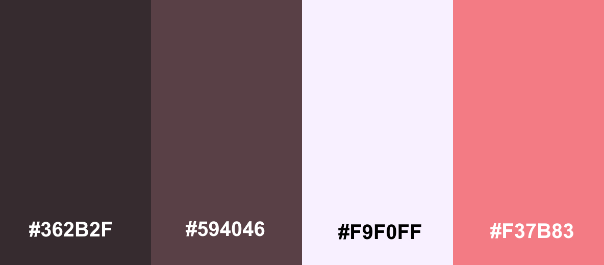
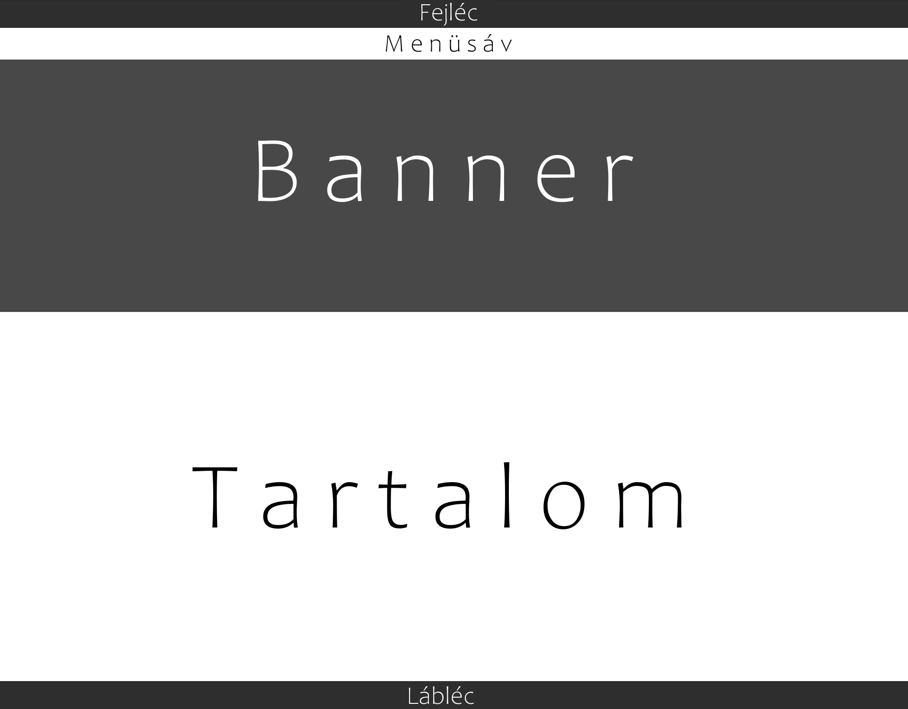

Gimnáziumi éveim során már találkoztam weboldal készítéssel emelt informatika óráimon. Legtöbbször viszont csak a Sharepoint Designer használatában merült ez ki, vagyis kódszerűen szinte nem is készítettem oldalt, ez a projekt mondható el az első lekódolt oldalamnak. Megszokást igényelt a kód látványa a Sharepointos felhasználási felület után, de sikerült ezen túllendülni.
Az oldalt saját preferenciáim ihlették, így vált témájává a fotózás, és kapta az általam legkedveltebb színvilágot:

A portfóliomat az elképzelt grafikai terv alapján igyekeztem kialakítani:

Az oldal kódolása során valódi probléma nem merült fel, a w3schools oldala mindenben segítségemre volt. Az összes elképzelésem, mint a mindig látható navigációs sáv, a banner vagy az oldal alján található lábléc, a segédoldalon található rengeteg interaktív anyag segítségével létrejöhetett. Igazi problémát a Github kezelése okozta. Első használatra személy szerint nem egyszerű/egyértelmű a használata, fórumos segítségek is ellentétesen írtak a működésbehozásról. Néhány próbálkozás után már elérhetővé vált az oldalam, de a Github nem volt hajlandó a weboldalam mappáit beolvasni, így a laborvideókban elhangzottakat sehogy sem tudtam megvalósítani, a /.../CSS/ mappaszerkezetet nemlétezőnek tekintette az oldal minden körülmény között, ezért az elérési utak átírása mellett döntöttem, hiszen rengeteg keresgélés után sem találtam megoldást rá. Leadás előtt viszont a Repository újrakészítésével még sikerült ezt megoldani.
Tóth Enikő ● 2020